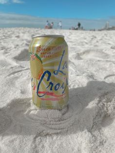

Welcome to LaCroix Enthusiast!
Indulge in the world of LaCroix, where every sip is a burst of refreshing flavor and fizzy goodness. Explore our collection of articles, reviews, and insider tips dedicated to the sparkling sensation that is LaCroix. Join our community of enthusiasts and share your love for this beloved beverage!
Whether you're a seasoned connoisseur or just discovering the joy of LaCroix, there's something here for everyone. So grab your favorite flavor, sit back, and enjoy the bubbly bliss of LaCroix!
